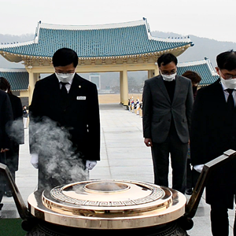

처음으로
어린이현충원
English
글자크기
작게
크게
민원안내
민원안내
안장/이장 신청
유족 기록 정정
묘소/묘비 보수 신청
민원 질의 응답
안장/이장 신청
안장 대상자
안장/이장 절차
일일 합동 안장식
관련 기관 연락처
안장/이장 신청
배우자 합장 신청
위패신청 및 심사절차
위패봉안실 미리보기
묘비문 신청
유족 등록 신청
유족 기록 정정
안장확인서 발급 신청
묘소/묘비 보수 신청
민원 질의 응답
민원 신청
자주 묻는 질문
신청서식 다운로드
참여·신청마당
참여·신청
마당
봉사활동
사이버 참배/추모의 편지
나라사랑 체험교육
사이버 참배
사이버 참배
추모의 편지
안장자 참배/찾기
공훈록 보기
안장/위패 현황
의전단 연주서비스
현충탑 참배
참배란
참배안내
참배요령
대화 마당
대화의장
참여후기
온라인 설문
봉사활동
봉사활동 안내
봉사활동 신청
신청 내용 수정/취소
확인서 발급
견학 프로그램
나라사랑 체험교육
호국배움이 투어
나라사랑 보훈스쿨
1사1묘역 돌봄 결연
보훈공연장 이용
대관신청 안내
보훈동산 이용안내
알림마당
알림마당
공지사항
채용 안내
석비 보수 안내
공지사항
채용 안내
행사 안내
일일 안장 행사
주요 행사
현충 뉴스
보도자료
이달의 현충인물
특별집례관
석비 보수 안내
민원 사무 편람
정보마당
정보마당
정보공개제도안내
업무추진비
통계정보
정보공개
정보공개제도안내
사전정보공표자료
정보공개목록
정보공개청구
업무추진비
법령정보
법령
훈령/예규
통계정보
안장위패현황
방문/참배현황
보훈행정서비스헌장
미디어 현충원
미디어
현충원
참배행사
가볼만한 곳
공모전 입상작
포토갤러리
참배행사
안장행사
추도행사
각종행사
가볼만한 곳
영상갤러리
참배행사
안장행사
추도행사
각종행사
나라사랑 영상
시민UCC
가볼만한 곳
공모전 입상작
사진 입상작
UCC 입상작
웹툰 입상작
엽서쓰기대회 입상작
체험 소감문
현충원 웹진
현충원소개
현충원소개
이용안내
안장묘역위치안내
찾아오시는길
인사말
역사와 연혁
이용안내
현충 시설
편의·업무 시설
현충원 명소
보훈모시미 운행안내
찾아오시는길
보훈둘레길
빨강길
주황길
노랑길
초록길
파랑길
쪽빛길
보라길
묘역 위치 안내/소개
묘역조성경과
국가원수 묘역
독립유공자 묘역
국가사회공헌자 묘역
천안함46용사 묘역
제2연평해전 묘역
연평도 포격전 묘역
장군 묘역
장병 묘역
경찰관간부 묘역
경찰관 묘역
소방공무원 묘역
순직공무원 묘역
의사상자 묘역
독도의용수비대 묘역
조직 및 업무
뷰어 다운로드
관련사이트
국립묘지
안장관리
시스템
안장자
찾기
사이버
참배
자주 찾는 서비스
안장/이장 신청
배우자 합장 신청
위패 신청
묘비문 신청
유족 등록 신청
유족 기록 정정 신청
묘소/묘비 보수 신청
각종 서식 다운로드
공지사항
현충뉴스
채용안내
행사안내
포토갤러리
애국지사, 장병, 경찰 등 비석건립현황(2021.4.26.기준)
2021-04-26
[집에서 만나는 현충원 2탄]
2021-04-26
보훈미래관 운영중단
2021-04-08
사회적 거리두기 2단계 시행에 따른 운영기준
2021-04-08
공직자 투기행위 집중신고 기간운영안내
2021-03-30
제26대 이승우 국립대전현충원장 취임
작성일 : 2021-04-13
국립대전현충원, 「서해수호의 날」 계기
추모 연주행사 실시
작성일 : 2021-03-16
국립대전현충원, 3월의 현충인물
선정패 증정식 개최
작성일 : 2021-03-04

국립대전현충원, 유가족을 대신해 참배
드리고 유튜브 채널을 통해 영상 제공
작성일 : 2021-02-03
국립대전현충원 공무직근로자(보훈해설사, 의전단) 채용 공고
2021-04-15
국립대전현충원 실무원(안장 및 묘역관리) 공무직근로자 채용 공고
2020-09-07
국립대전현충원 실무원(안장 및 묘역관리) 공무직근로자 채용 공고
2020-06-01
2020년 국립대전현충원 공업서기보(전기) 경력경쟁채용 공고
2020-06-29
국립대전현충원 공무직근로자(경비대) 채용 공고
2020-05-19
국립대전현충원, 제17회 나라사랑 체험소감문 공모
작성일 : 2021-04-22
국립대전현충원, 서해수호의 날」 계기
추모의 5만 5천 걸음 걷기 도전 시작
작성일 : 2021-03-19
국립대전현충원, 서해수호의 날 계기 추모 이벤트 진행
작성일 : 2021-02-22
국립대전현충원, 3·1절 제102주년 기념 이벤트 진행
작성일 : 2021-02-19
개방시간
하절기(3월~10월) 06:00 ~ 18:00
동절기(11월~2월) 07:00 ~ 18:00
이용안내
오시는 길
묘역 위치 안내
보훈모시미
이 달의 현충 인물
열린 현충원,
밝은 현충원
4
월호
오늘의 행사 알림
18
19
20
21
22
23
24
안장:
5
참배:
2
체험교육:
6
안장:
12
참배:
3
체험교육:
7
안장:
12
참배:
6
체험교육:
5
안장:
18
참배:
3
체험교육:
8
안장:
16
참배:
4
체험교육:
8
안장:
17
참배:
5
체험교육:
6
안장:
14
참배:
7
체험교육:
4